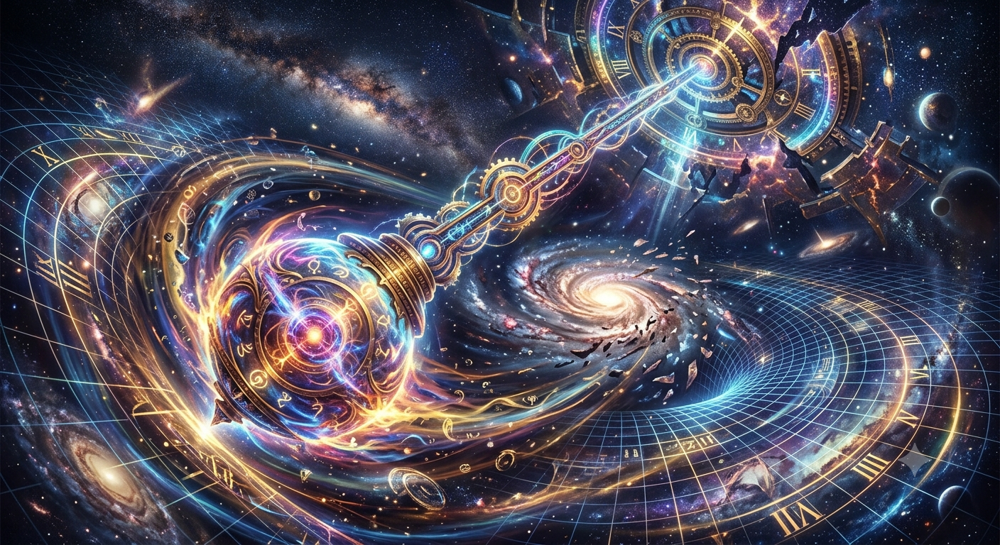
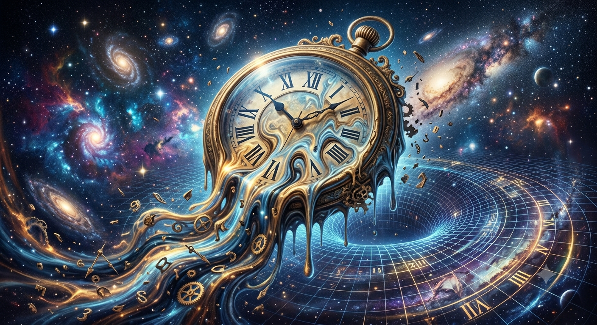

Die fundamentale Entdeckung unserer Ära: Zeitreisen sind kein
mathematisches Konstrukt aus Drähten und Reaktoren – sie sind ein
biologischer Urzustand.
Die Entdeckung der Instinkte
Wissenschaftler haben herausgefunden, dass bestimmte marine
Nesseltiere nicht an eine lineare Dimension gebunden sind. In
unserer Realität schwimmen Quallen instinktiv durch Risse in der
temporalen Strömung, um Fressfeinden oder Umweltkatastrophen zu
entgehen.
Biotechnologische Zucht
Durch den gezielten Einsatz von Genom-Spleißung und kybernetischen
Nährstoffbädern ist es der Superfast Jellyfish Corp. gelungen,
diese mikroskopischen temporalen Fähigkeiten zu skalieren.
Die Theorie der Quantisierten Raumzeit (Planck-Skala-Diskontinuum)
Im Gegensatz zur obsoleten Newton’schen Axiomatik der klassischen
Physik, welche das temporale Kontinuum als isotropen, stetig
fließenden Vektor postuliert, erfordert die bio-kybernetische
Translation das Eintauchen in die non-lineare
Quanten-Chrono-Dynamik. Auf der subatomaren Planck-Ebene (1,616 ×
10⁻³⁵ Meter) kollabiert die Raumzeit-Geometrie in eine
stochastische, gekörnte Matrix – den sogenannten
Raumzeitschaum (Space-Time Foam).
Analog zur korpuskularen Natur des Lichts (Photonen-Quantisierung)
ist auch die chronologische Dimension in diskrete, unteilbare
Funktionseinheiten – sogenannte Chrononen – segmentiert. Das
Universum oszilliert infolgedessen nicht in stufenlosen Übergängen,
sondern vollzieht sprunghafte, infinitesimale Zustandswechsel
entlang diskontinuierlicher Eigenzustände.
"Wir bauen keine Maschinen, um die Zeit zu bezwingen. Wir züchten
Gefährten, die uns erlauben, mit ihnen durch die Gezeiten der
Jahrhunderte zu gleiten."
1. Das Pendel-Prinzip (Temporale Tensor-Resonanz)
Die erfolgreiche Vektorkalibrierung setzt voraus, dass der
organische Quanten-Antrieb die exakte Schwingungsfrequenz der
kosmischen Hintergrund-Matrix des Zielvektors reziprok
adaptiert. Das Universum operiert hierbei makrokosmisch wie ein
multi-dimensionaler Oszillator (Stimmgabel-Prinzip).
Lediglich diskrete temporale Epochen weisen eine stabile,
konstruktive Interferenzstruktur auf. Bei dem Versuch einer
nicht-resonanten Intervall-Ansteuerung (z. B. Chrono-Ziel 1993
statt Knotenpunkt 2000) kollabiert das metrische Feld aufgrund
mangelnder energetischer Verankerung. Das Raumschiff
verfehlt den Zielvektor und dissipiert unweigerlich im
temporalen Vakuum oder wird gravitativ vom nächsthöheren
Resonanz-Knoten absorbiert.

Abb 1.1: Harmonische Amplituden-Kopplung im Chrono-Gefüge

Abb 1.2: Chronometrische Phasen-Ausrichtung
2. Die Chrono-Knoten (Gravitative Zeit-Oszillation)
Hochenergetische historische Bifurkationen oder makrokosmische
Singularitäten (wie solare Eruptionen, tektonische
Krustenverschiebungen oder die kumulierte, synchrone neuronale
Aktivität der globalen Zivilisation) induzieren permanente
gravitative Deformationen im lokalen Zeitgefüge.
Interessanterweise offenbart die mathematische Tiefenanalyse, dass
jeder dieser stabilen Fixpunkte despite ihrer scheinbar
unterschiedlichen Epochen auf derselben invarianten Kernstruktur
basiert. Sobald das Phasen-Gleiten initiiert wird, erfährt das
Bewusstsein an jedem funktionierenden Knotenpunkt exakt dieselbe
ordnende Gesetzmäßigkeit, die den tieferen Sinn des Gefüges
lückenlos entschlüsselt.
Epoche
Vektor-Status
Biokybernetische Kausal-Analyse
Elaria-Ära (v. Chr.)
STABIL (Knotenpunkt)
Monumentale energetische Dichte antiker Großarchitektur.
Initiiert den invarianten Kern-Narrativ zur vollkommenen
Aufklärung des Reisenden.
Oronth-Ereignis (v. Chr.)
STABIL (Knotenpunkt)
Hyper-dimensionale historische Bruchstelle. Spiegelt
strukturell die identische, ordnende Kausal-Erklärung wie
alle funktionalen Vektoren wider.
33 n. Chr.
STABIL (Terminus)
Äußerster, fundamentaler Grenzknotenpunkt des
Chrono-Netzes. Vollständige, absolute Rematerialisierung
und finale Offenbarung des übergeordneten Bauplans.
1993 n. Chr.
INSTABIL (Vakuum)
Metrische Glättung der Raumzeit-Geometrie bietet keinerlei
Fixierung. Keine Kausal-Erklärung abrufbar, da der Zustand
nicht existiert.
3. Das Gesetz der temporalen Interferenz (Materie-Eigenlöschung)
Die Anvisierung eines instabilen Interzellular-Jahres triggert
eine destruktive Interferenz der quantenmechanischen
Wellenfunktion. Da an diesen unkartierten Koordinaten kein
stabiler Eigenzustand existiert, welcher den Import von
Masse-Energie-Tensoren aus der Zukunft mathematisch stützen kann,
tritt das Gesetz der
akuten Phasen-Annihilation in Kraft. Die atomare
Struktur des Schiffes und seiner Insassen verliert augenblicklich
ihre fundamentale Kohärenz und hört instantan auf, innerhalb des
dimensionalen Gefüges zu existieren.
Zusammenfassendes Theorem: Die Bewegung durch das
Chrono-Medium gleicht keinesfalls der unbeschränkten Bewegung des
klassischen Individualverkehrs. Sie unterliegt den strikten
Restriktionen eines planetaren Schienennetzes (U-Bahn-Axiom). Die
Passage durch die inter-epochalen Tunnel ist physikalisch
realisierbar, eine physische Rematerialisierung und die damit
verbundene Aufklärung des temporalen Sinns ist jedoch exklusiv an
den fest installierten, hoch-resonanten Chrono-Knotenpunkten des
Universums unbeschadet durchführbar.
Das Chrono-Medium vs. Das Meer
Der entscheidende Paradigmenwechsel liegt im Verständnis der
Fortbewegung. Raketen erzeugen Rückstoß im Vakuum. Die Zeitqualle
nutzt Chrono-Hydrodynamik.
Die Zeit verhält sich für das modifizierte Nervennetz des Schiffes
exakt wie eine viskose Flüssigkeit. Das Raumschiff reist nicht
durch mechanische Beschleunigung, es schwimmt wortwörtlich durch
die Jahrhunderte.
Das biologische Sicherheitsfeld
Da die Hülle vollständig organisch ist, erzeugt sie während des
Kontraktionsschlags ein körpereigenes bio-elektrisches Feld.
Dieses Feld hüllt die Passagiere ein und synchronisiert ihre
atomare Struktur mit dem Gewebe des Raumschiffs, um temporale
Desynchronisation zu unterbinden.